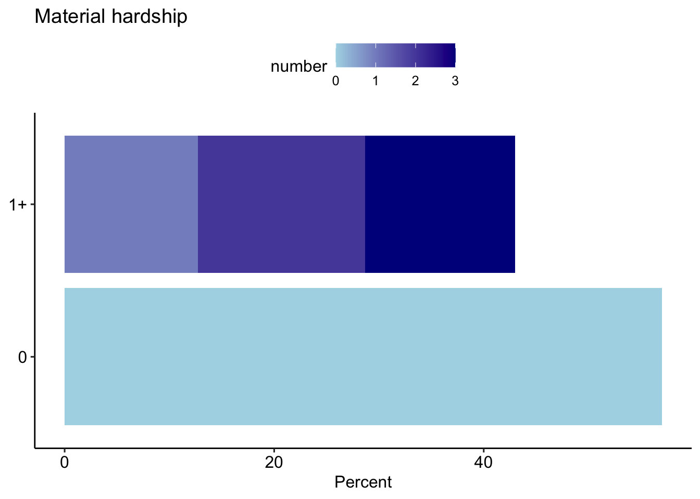
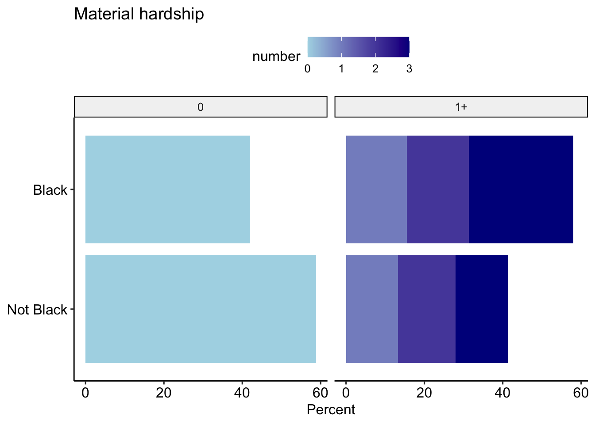
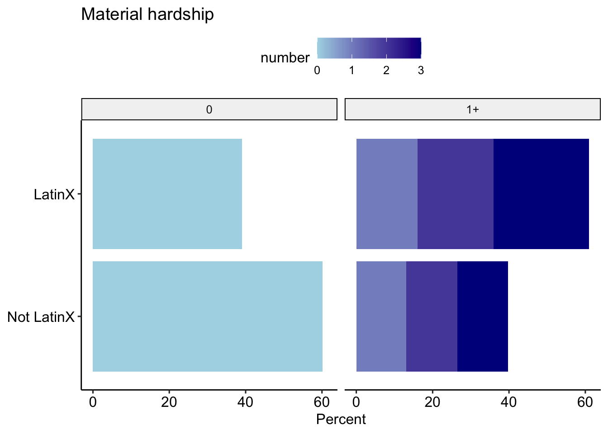
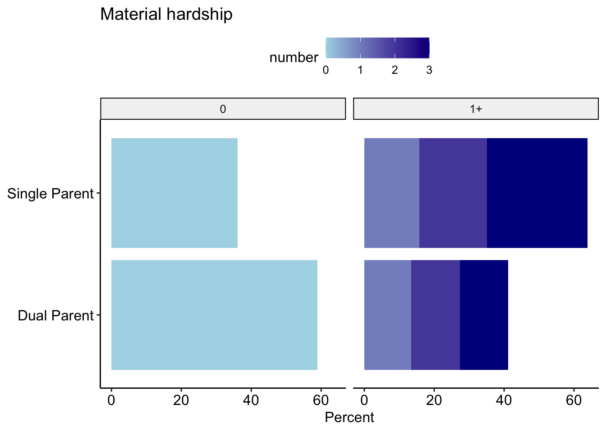
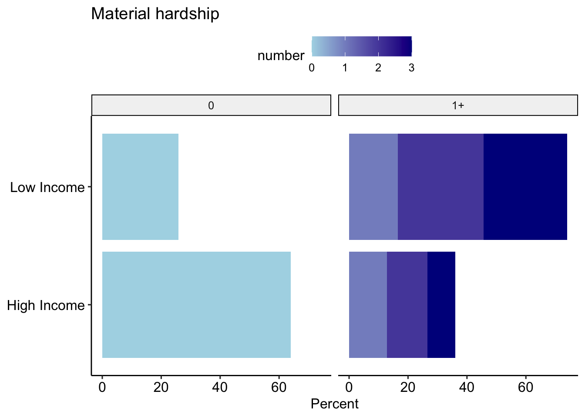
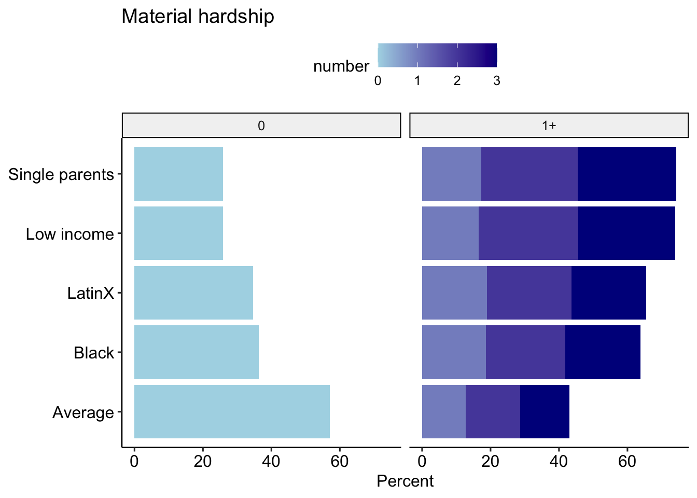

These analyses are based on responses collected from 8051 caregivers between the dates of April 06, 2020 and September 10, 2020. These caregivers represent a range of voices: 10.38% are Black/African American, 20.08% are LatinX, and 27.26% live at or below 1.5 times the federal poverty line. Proportions/percentages are calculated based on the item-level response rates, not out of the total sample size. The data for these analyses are not weighted.
Note that foreclosure and housing were combined into a single variable.





